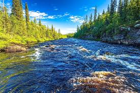

Explore Our Rivers
Adventure Awaits in Every Bend
Salmon River
Known for its thrilling rapids and deep canyons, the Salmon River is perfect for adrenaline seekers.
Snake River
Gentle currents and scenic views make this river ideal for families and beginners.

Colorado River
Cutting through the Grand Canyon, this river offers unmatched beauty and unforgettable rafting.

Why Our Rivers Stand Out
Whether you're navigating the wild rapids of the Salmon River or floating peacefully down the Snake, each river offers a unique experience. Our guides know the terrain and tailor each trip to your comfort level.
Plan Your Trip